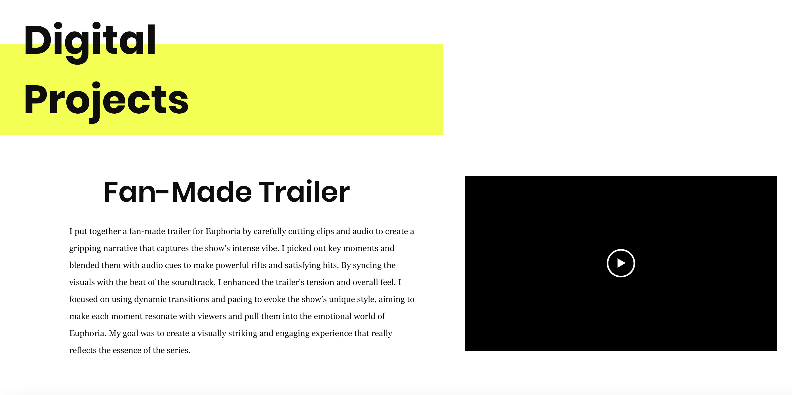

First, is my Digital Studies portfolio. I created a website for my Digital Studies capstone class. This was required in order for me to earn the Digital Studies experience. While it does show my skill set and experience in all areas, it is mainly tailored towards my Digital Studies projects that I've worked on. Click the link below and check it out!

Digital Studies Site
Second are a few notable papers that I've worked on. I've created a table to organize them below. Feel free to check them out.
| Title of Paper | Description | Date Written | Link |
|---|---|---|---|
| The Ethics of Consent in Data Usage | A look into Target's marketing practices and determining whether they're ethical or not. (Data Surveillance) | October 13th, 2024 | Ethical Data Usage Essay |
| Effects of Gamification | A look into the effects of people's motivation on physical health apps when they are able to receive prizes or lose points. (Incentivization) | April 19th, 2024 | Gamification Effects Essay |
| How Authority & Gender Are Depicted in Paradise Lost | An examination into the reading Paradise Lost of what the author is trying to get across through his characters. | December 4th, 2023 | Paradise Lost Essay |
As you can see, I've taken a wide variety of classes at the University of Wisconsin-Madison. While these are a few projects of mine, they don't show off my primary skill set. Below is a list of classes that I have taken that highlight my skill set.
- LIS 464: Applied Database Design
- LIS 440: Concepts of Data & Info Science
- LIS 461: Data Ethics and Policy
- COMP SCI 320: Data Sci Programming II
- LIS 407: Data Storytelling